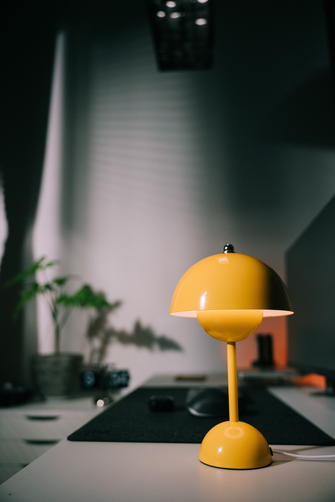
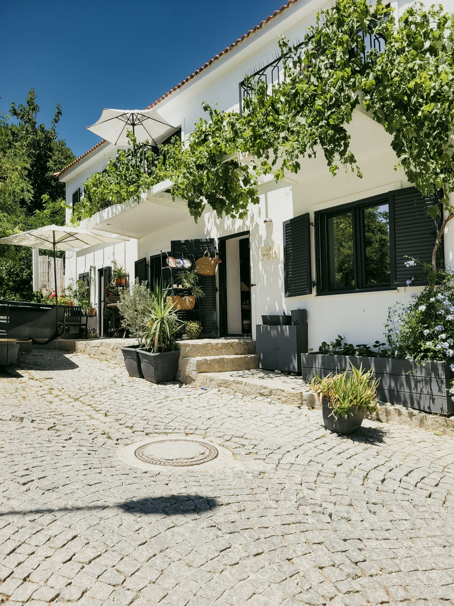
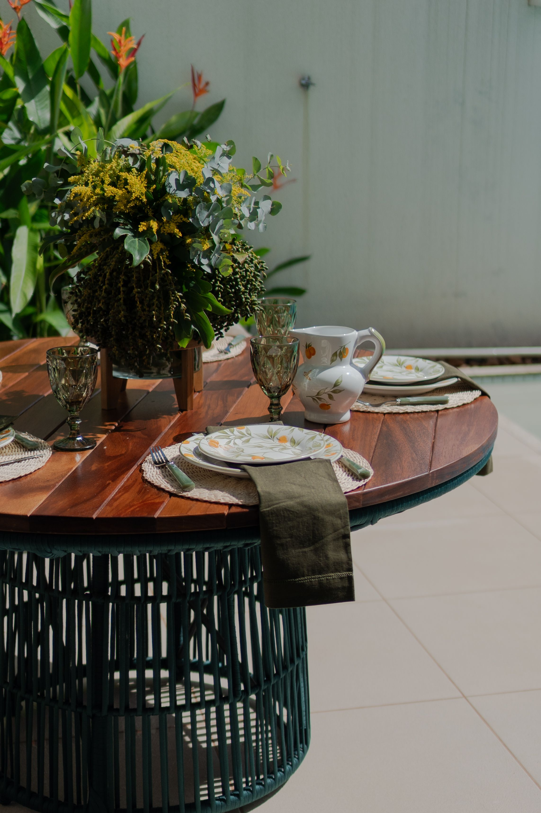

En este artículo
- Introducción
- Planificar la distribución antes de decorar
- Elegir muebles cómodos y resistentes al exterior
- Crear sombra y protección para usar el patio más horas
- Utilizar plantas para aportar frescura y privacidad
- Iluminar el patio para disfrutarlo por la noche
- Añadir detalles sin convertir el patio en un almacén
- Mantener el patio agradable durante todo el año
- Cómo adaptar el proyecto a la vida diaria
- Una comprobación final antes de comprar o instalar
- Preguntas frecuentes
- Conclusión
Introducción
Aprende a crear un patio acogedor con una distribución cómoda, muebles resistentes, sombra, plantas, iluminación y detalles que faciliten disfrutar del exterior. La diferencia entre una idea atractiva y un espacio que funciona durante años suele estar en la planificación. Antes de comprar, instalar o mover elementos, conviene observar las condiciones reales, medir y pensar en las rutinas de quienes utilizan la vivienda.
Esta guía desarrolla el proceso paso a paso con criterios prácticos. El objetivo no es copiar una fotografía, sino tomar decisiones adaptadas al tamaño disponible, la luz, el mantenimiento y el presupuesto. Así es posible obtener un resultado agradable sin introducir soluciones que después resulten difíciles de mantener.
Planificar la distribución antes de decorar
Un patio acogedor comienza con una distribución que responda a la forma en que realmente se utilizará. Antes de comprar muebles, mide el espacio y localiza puertas, ventanas, desagües y recorridos habituales. Después define la función principal: comer al aire libre, conversar, descansar, cultivar plantas o combinar varias actividades. Cuando el patio es pequeño, elegir una prioridad evita llenarlo con piezas que apenas se usan.
La circulación debe permanecer libre. Conviene poder entrar, sentarse y desplazarse sin esquivar continuamente macetas o sillas. En patios amplios, las zonas pueden diferenciarse mediante una alfombra exterior, grupos de macetas o la orientación del mobiliario, sin necesidad de levantar divisiones. En espacios estrechos, colocar los muebles principales junto al perímetro suele liberar el centro y mejorar la sensación de amplitud.
Observar el patio a distintas horas permite detectar dónde cae el sol, qué zonas reciben viento y cuáles ofrecen mayor privacidad. Esa información ayuda a decidir dónde colocar la mesa, un banco o una tumbona. Una distribución basada únicamente en una fotografía de inspiración puede resultar incómoda si ignora las condiciones reales del lugar.
Elegir muebles cómodos y resistentes al exterior
Los muebles deben adaptarse al tamaño del patio y a la exposición ambiental. Madera, metal, fibras sintéticas y otros materiales ofrecen comportamientos diferentes frente al sol y la humedad. Antes de comprar, revisa las indicaciones de mantenimiento y piensa cuánto tiempo estás dispuesto a dedicar a su cuidado. Un mueble bonito pero demasiado exigente puede convertirse en una carga.
La comodidad también depende de las proporciones. Una mesa demasiado grande puede bloquear el paso, mientras que asientos muy pequeños pueden resultar incómodos durante reuniones largas. Los muebles plegables, apilables o modulares son especialmente útiles cuando el patio necesita cambiar de función. Permiten liberar espacio sin renunciar a disponer de asientos adicionales cuando llegan visitas.
Los textiles exteriores aportan confort y color, pero deben poder guardarse o limpiarse con facilidad. Cojines desenfundables y tejidos adecuados para exterior simplifican el mantenimiento. Si el patio no está cubierto, disponer de un arcón o espacio interior cercano para guardar textiles durante lluvia intensa prolonga su buen estado.

Crear sombra y protección para usar el patio más horas
Un patio expuesto al sol puede resultar poco agradable durante las horas más cálidas. Sombrillas, toldos, pérgolas y vegetación pueden crear sombra, pero la solución debe elegirse según orientación, viento y tamaño. Una sombrilla móvil ofrece flexibilidad; un toldo puede proteger una zona amplia; y una pérgola puede convertirse en una estructura permanente que organice el espacio.
La sombra no debe bloquear toda la luz de la vivienda. Antes de instalar una cubierta fija, observa cómo afectará a las ventanas cercanas. En algunos patios funciona mejor una solución regulable que pueda abrirse en invierno y cerrarse en verano. También es importante asegurar correctamente cualquier elemento textil o ligero frente al viento.
Las plantas trepadoras pueden aportar sombra y una sensación natural, aunque requieren tiempo y mantenimiento. Si se utilizan sobre una estructura, hay que considerar su peso adulto y la necesidad de poda. Combinar sombra artificial con vegetación permite obtener resultados más rápidos sin depender exclusivamente del crecimiento de las plantas.
Utilizar plantas para aportar frescura y privacidad
Las plantas ayudan a suavizar superficies duras y hacen que un patio resulte más vivo. La selección debe responder a la cantidad de sol, al clima y al tamaño de los recipientes. En lugar de comprar muchas especies pequeñas sin planificación, puede ser más efectivo combinar algunas plantas estructurales con variedades de menor tamaño y flores estacionales.
Agrupar macetas facilita el riego y crea mayor impacto visual. Variar alturas mediante soportes o recipientes de distintos tamaños aporta profundidad, pero conviene mantener algún elemento común para que el conjunto se vea ordenado. En patios con poco suelo disponible, paredes, barandillas y estructuras verticales pueden ampliar la superficie de cultivo.
Para mejorar la privacidad, los recipientes grandes con arbustos adecuados o las trepadoras sobre celosías pueden filtrar vistas sin cerrar completamente el patio. Antes de elegir, considera el crecimiento de raíces y ramas. Una planta que parece pequeña en el vivero puede necesitar mucho más espacio después de varios años.
Iluminar el patio para disfrutarlo por la noche
La iluminación exterior debe permitir moverse con seguridad y crear ambiente sin convertir el patio en un espacio excesivamente brillante. Una luz general suave puede complementarse con puntos cerca de escalones, caminos o zonas de comedor. Las guirnaldas y lámparas portátiles aportan calidez, mientras que una iluminación dirigida puede destacar plantas o texturas.

Los equipos deben ser adecuados para exterior y para el nivel de exposición al agua de su ubicación. Cables, enchufes y conexiones improvisadas no son una buena solución. Cuando sea necesaria una instalación eléctrica permanente, conviene recurrir a un profesional cualificado. La seguridad debe estar por encima del efecto decorativo.
Las luces solares pueden ser útiles en determinadas zonas, aunque su rendimiento depende de las horas de sol que reciban. Antes de comprar muchas unidades, prueba una o dos en el lugar real. Una combinación de fuentes permite adaptar la iluminación a una cena, una conversación tranquila o simplemente al tránsito nocturno.
Añadir detalles sin convertir el patio en un almacén
Los detalles terminan de dar carácter al patio: una alfombra apta para exterior, algunas macetas especiales, una bandeja para la mesa o textiles coordinados pueden transformar el ambiente. Sin embargo, demasiados objetos reducen superficie útil y aumentan el mantenimiento. Es preferible escoger pocos elementos con una función clara.
El color puede introducirse mediante textiles y plantas, que son más fáciles de cambiar que los muebles principales. Una base neutra permite renovar el patio con pequeñas modificaciones estacionales. Los materiales naturales, las fibras y la madera pueden aportar calidez, siempre que sean adecuados para las condiciones exteriores.
Por último, piensa en el almacenamiento. Herramientas, regaderas, cojines y accesorios necesitan un lugar. Un banco con espacio interior o un armario exterior compacto ayuda a mantener el patio despejado. El orden influye tanto en la sensación acogedora como la decoración.
Mantener el patio agradable durante todo el año
Un patio acogedor necesita una rutina de mantenimiento proporcionada. Barrer hojas, limpiar superficies y revisar textiles evita que pequeñas tareas se acumulen. La frecuencia dependerá del clima, de la vegetación y de si el patio está cubierto. Crear un lugar específico para herramientas y productos de limpieza hace más fácil actuar cuando es necesario.
Al cambiar de estación, revisa tornillos, uniones, pintura y signos de humedad u oxidación en los muebles. Las plantas también pueden necesitar poda, trasplante o protección. Realizar estas revisiones antes de periodos de lluvia intensa, calor o frío ayuda a prevenir deterioros y permite disfrutar del espacio cuando llega el buen tiempo.

No todo tiene que permanecer instalado durante todo el año. Guardar textiles, sombrillas o accesorios cuando no se utilizan puede prolongar su duración. Un patio flexible, capaz de adaptarse a estaciones y actividades, suele ser más práctico que uno diseñado como una composición permanente.
Cómo adaptar el proyecto a la vida diaria
Antes de invertir mucho dinero, utiliza el patio durante algunos días con una distribución provisional. Mover sillas existentes, colocar cajas para representar macetas o marcar una mesa con cinta permite comprobar si la idea funciona. Esta prueba revela dónde se necesita sombra, qué recorridos deben quedar libres y qué zona resulta más agradable al final del día.
El presupuesto se aprovecha mejor cuando se priorizan los elementos que afectan al uso: un asiento cómodo, una superficie estable, sombra cuando es necesaria y buena iluminación. La decoración puede incorporarse después. Comprar muchos accesorios antes de resolver esas necesidades suele producir un patio vistoso en fotografías pero poco práctico en la vida diaria.
También conviene considerar a quién utilizará el espacio. Niños, mascotas, personas mayores o invitados pueden requerir superficies antideslizantes, muebles estables o recorridos más amplios. Adaptar el patio a sus usuarios reales hace que se utilice con mayor frecuencia y reduce riesgos innecesarios.
Una comprobación final antes de comprar o instalar
Antes de cerrar el proyecto, recorre mentalmente un día normal en el patio. Comprueba dónde se apoyará una bebida, si las sillas pueden retirarse sin chocar, si una persona puede pasar cuando los asientos están ocupados y si existe un lugar para guardar los objetos que no deben quedar a la intemperie. Revisar estas acciones sencillas permite detectar problemas que no siempre aparecen en un plano. También ayuda a distinguir entre elementos realmente útiles y accesorios que solo ocupan espacio.
Observa además cómo se comporta el agua cuando llueve o cuando se limpian las superficies. Los desagües deben permanecer accesibles y los muebles no deberían impedir la evacuación. Si incorporas alfombras, macetas grandes o tarimas, comprueba que no creen zonas donde el agua quede retenida. Un patio fácil de secar y limpiar requiere menos esfuerzo y conserva mejor sus materiales.
Por último, deja margen para cambiar. Las necesidades pueden variar y las plantas crecerán. Una distribución flexible permite mover una mesa, añadir un asiento o retirar una maceta sin rehacer todo el espacio. Esa capacidad de adaptación es una de las mejores formas de mantener el patio cómodo y acogedor a largo plazo.
Preguntas frecuentes
¿Qué es lo primero que conviene hacer para mejorar un patio?
Medir, observar sol y viento y decidir para qué se utilizará principalmente. Con esa información se puede distribuir el espacio antes de comprar muebles o decoración.
¿Cómo hacer acogedor un patio pequeño?
Prioriza una función, utiliza muebles proporcionados, incorpora plantas en vertical y añade iluminación suave y algunos textiles sin bloquear la circulación.
¿Qué muebles son mejores para un patio?
Los que están preparados para exterior, caben correctamente en el espacio y requieren un mantenimiento compatible con tu rutina. El material ideal depende del clima y de la exposición.
Conclusión
Cómo crear un patio acogedor y funcional en casa es un proyecto que mejora cuando se toman decisiones a partir del uso real del espacio. Medir, observar las condiciones, priorizar la funcionalidad y elegir soluciones que puedan mantenerse con facilidad evita compras innecesarias y permite que el resultado evolucione con la vivienda.
No es necesario transformar todo de una vez. Empezar por los cambios que resuelven necesidades concretas, comprobar cómo funcionan y ajustar después suele ofrecer mejores resultados. La estética cobra más sentido cuando acompaña a la comodidad, al orden y a un mantenimiento razonable.